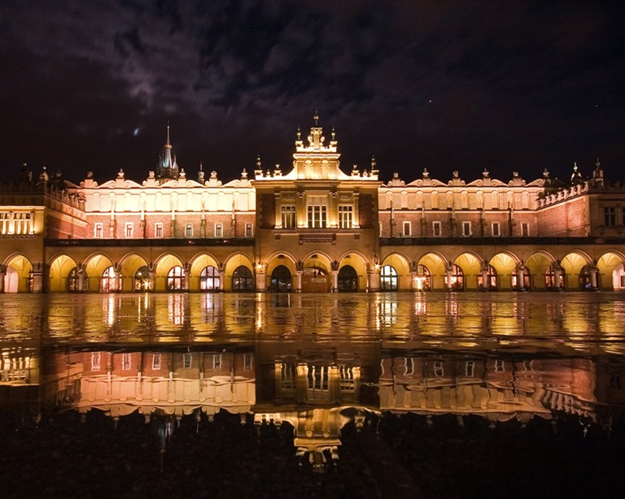

Sukiennice to jeden z najbardziej rozpoznawalnych zabytków w Krakowie, położony na Rynku Głównym, w sercu Starego Miasta. Ich historia sięga XIV wieku, kiedy to zostały wybudowane w celu obsługi handlu tekstyliami. Dziś Sukiennice stanowią jeden z najważniejszych punktów turystycznych w mieście.
W Sukiennicach można poczuć atmosferę średniowiecznego Krakowa, spacerując po długiej hali handlowej, która w przeszłości była miejscem wymiany towarów. Wewnątrz znajdują się liczne sklepiki z pamiątkami, wyrobami rzemieślniczymi, biżuterią i lokalnymi produktami. Sukiennice pełnią również funkcję galerii sztuki, gdzie odbywają się wystawy poświęcone polskiej kulturze i historii.
Architektura Sukiennic jest wyjątkowa, a sama budowla charakteryzuje się stylem gotyckim oraz renesansowym. W XIV wieku, gdy powstawały, były jednym z największych budynków handlowych w Europie. Z czasem zostały przebudowane, ale ich kształt i funkcja pozostały niezmienne. Najbardziej charakterystycznym elementem budowli są dwie wieże, które wznoszą się nad całą konstrukcją, tworząc niepowtarzalny widok.
W Sukiennicach znajduje się także sala wystawowa, w której można zobaczyć dzieła sztuki z różnych okresów historycznych. Muzeum Narodowe w Krakowie organizuje w tej przestrzeni liczne wystawy, a także ekspozycje poświęcone historii miasta. Sukiennice, jako jeden z najstarszych budynków handlowych w Polsce, pełnią rolę łączącą tradycję z nowoczesnością.
Poza swoją rolą jako centrum handlowe, Sukiennice były także świadkami wielu ważnych wydarzeń w historii Krakowa. Z ich okien często podziwiano rozgrywki rycerskie, procesje, a także spotkania władzy królewskiej i przedstawicieli innych miast. Mimo że dzisiaj pełnią funkcję turystyczną, nadal pozostają ważnym elementem kulturowym i historycznym Krakowa.Przez wieki Sukiennice przeszły wiele zmian. W XVIII wieku budynek został przebudowany, a w XIX wieku rozbudowano go o neorenesansowe elementy. Dzisiejszy wygląd Sukiennic to efekt wieloletnich prac konserwatorskich, które miały na celu zachowanie oryginalnej konstrukcji przy jednoczesnym dostosowaniu obiektu do współczesnych standardów.
Warto dodać, że Sukiennice stanowią także miejsce spotkań i wydarzeń kulturalnych, takich jak koncerty, wystawy i jarmarki. Co roku organizowane są tu liczne festiwale, które przyciągają turystów z całego świata. Na uwagę zasługują także coroczne jarmarki bożonarodzeniowe, które odbywają się na Rynku Głównym.
Chociaż Sukiennice to przede wszystkim atrakcja turystyczna, mają również swoje miejsce w sercach krakowian. Są jednym z symboli miasta, stanowiąc punkt odniesienia dla mieszkańców oraz dla osób odwiedzających to piękne miasto. Każdy, kto odwiedza Kraków, nie może pominąć tego miejsca w swojej wędrówce po Starym Mieście.